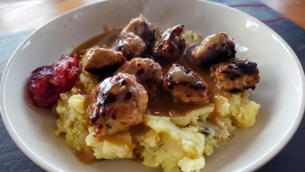

Bramley apple meatballs with bramley apple, cranberry sauce
35 mins
Serves 4

Ingredients
For the meatballs:
1
Bramley apple, peeled, cored and grated
500g turkey thigh mince
1
white onion, finely chopped
1tsp parsley (fresh, dried or frozen)
100g bread crumbs
1
egg, whisked
Salt and pepper, to taste
1tbsp sunflower oil
For the gravy
30g butter
2tbsp flour
400ml stock
1tbsp Worcestershire sauce
30ml single cream (optional)
For the Bramley apple and cranberry sauce
4tbsp apple sauce
4tbsp cranberry sauce
Instructions
Mix together the ingredients for the meatballs and roll into roughly 30 walnut sized balls.
Heat a large non-stick frying pan over a medium heat, add a little sunflower oil and fry the meatballs in batches until cooked through. Remove the meatballs from the pan and set aside.
To make the gravy, add the butter to the frying pan and melt. Sprinkle over the flour and stir cooking for 2 minutes. Gradually whisk in the hot stock and keep stirring until the gravy has thickened. Add the Worcestershire sauce, and season to taste. Pour in the cream, if using, and whisk. Combine the Bramley apple sauce and cranberry sauce.
Serve the meatballs on a bed of creamy mashed potato, pour over the hot gravy and serve with the Bramley apple and cranberry sauce on the side.